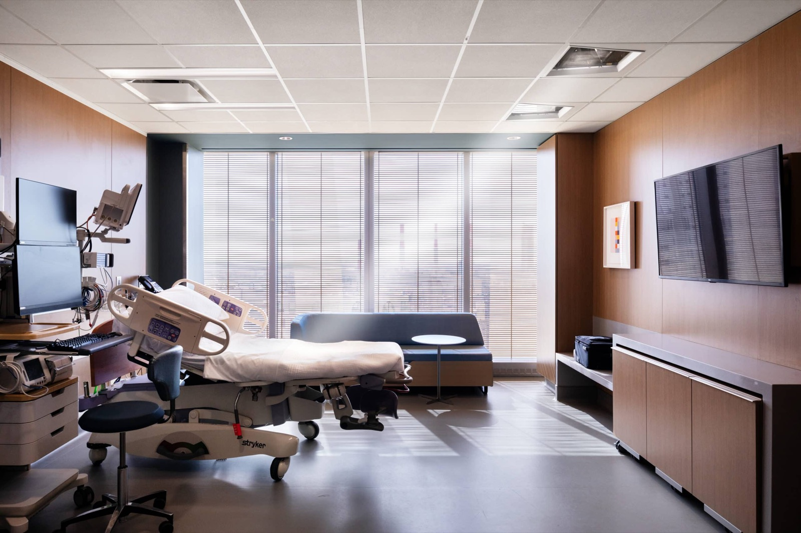
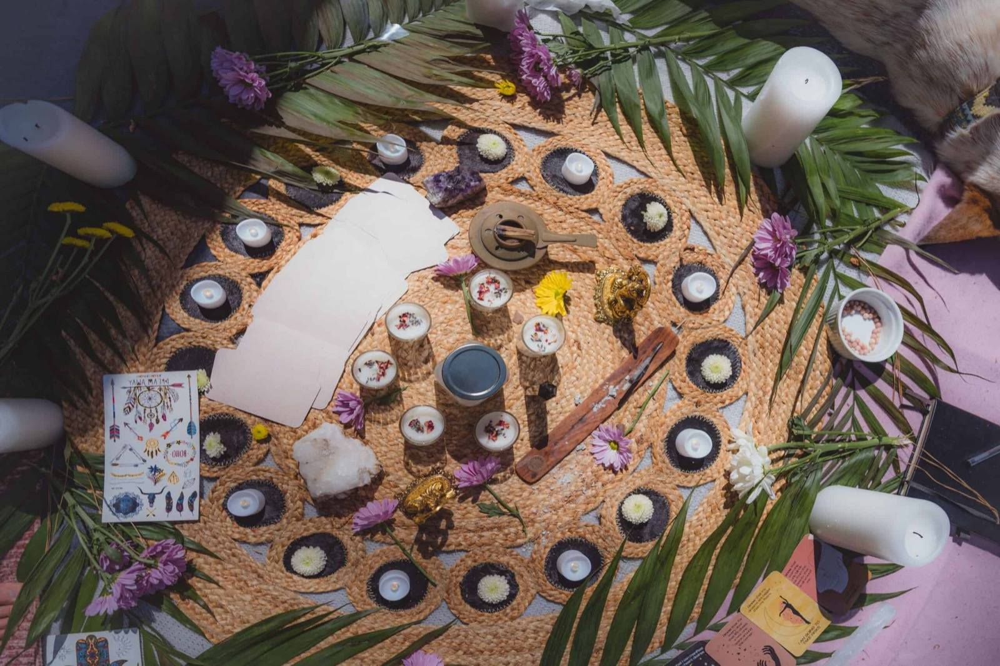

Picture it done right: warm water, soft light, quiet music, and people you love — no clock, no strangers, no rush. A calm room you could stay in for days, every meal brought to you, nothing to do but meet your baby and be looked after. That isn't a fantasy. Somewhere in the world, it's simply how it's done.
This page sells you that ideal on purpose — because you can't reach for something you can't picture. Then it shows you how close you can actually get, right here, today.
⬇️UprightNot on your back
💧Warm waterA birthing pool
🤝Known facesContinuity
🕯️UndisturbedDim & calm
🌙No rushYour own clock
The dream
The birth you're not offered
If money were no object, what would you build? Not a ward. A retreat. Deep warm water and candlelight. A midwife and a doula who've known you for months. Nourishing meals appearing at the door. Days, not hours — and afterwards, weeks of being cared for, so all you do is heal and hold your baby.
It already exists for those who can pay. In New York, Boram — a postnatal retreat modelled on Korean tradition, meals delivered, a staffed nursery, round-the-clock care. In California, boutique birth suites with deep spa tubs and dimmable chandeliers. Across Asia, whole centres built for exactly this. The ideal is real. It's just not offered to most of us — yet.
Warm water, candlelight, no clock — the atmosphere a body actually births well in.
The betrayal
And here's what most are given instead
A metal bed under fluorescent light, in a room that looks designed to make you tense. One of the most sacred moments of a human life, handed the atmosphere of a procedure. It wasn't an accident — it was designed this way: for the system's convenience, not the mother's body.
✓ What it could be

✕ What it usually is
The science on your side
Why the beautiful way is also the smart way
Here's the part that makes it more than a nice idea: the calm, warm, unhurried birth isn't just pleasant — it's what the body is actually built for. The default room fights the physiology; the retreat works with it.
Let gravity do the work — upright, kneeling, leaning, the way every mammal does it. Flat on your back is the one position that fights you.
Get in the water — a deep, warm pool eases pain and lowers fear. Many women call it the single thing that changed the whole experience.
Keep it undisturbed — oxytocin, the hormone that runs labour, is shy. Bright light, strangers and fear switch it off. Dim, warm and private is the physiology, not a luxury.
Known faces, not strangers — continuous support from someone she trusts is one of the best-evidenced things in all of maternity care.
No rush — much of the "cascade of intervention" starts with a clock, not a problem. Given time and calm, a straightforward birth mostly runs itself.
Safety comes first, always. This is about environment and options — not medical advice, and not anti-doctor. Hospitals and obstetricians save lives when a birth needs help, which is exactly why the calm ideal keeps skilled help close by.
≈1 in 3
Dutch babies are born at home or in a midwife-led setting — because a whole country decided a healthy birth is normal, not a medical event.
Proof it's real
It's already normal elsewhere
If this sounds fringe, it's only fringe here. Whole countries are built around birth as a normal, physiological event.
🇳🇱
The Netherlands
The developed world's home of home birth — midwife-led for healthy pregnancies, doctors called only if needed.
🇩🇪
Germany — the birth houses
Geburtshäuser: freestanding, midwife-run birth houses with pools and home-like rooms, hospital nearby if required.
🇳🇿
New Zealand
One Lead Maternity Carer — usually a midwife — with the mother through pregnancy, birth and after. The known-face model, as policy.
Mothering the mother
The world doesn't send you home the next day
The birth is only half of it. Across the world there's an ancient answer to the exhausted new mother sent home alone: weeks of being cared for, so she can heal and bond while others cook, clean and hold the baby.
🇨🇳
China — zuo yuezi
"Sitting the month": 30–40 days of rest, warmth and nourishing food, family caring for mother and baby.
🇰🇷
Korea — sanhujoriwon
Whole postpartum-care centres where a new mother stays for weeks, fed and rested while staff mind the baby.
🌎
Latin America — la cuarentena
"The forty days": the mother rests, is fed and supported by the women around her, and simply recovers.
🇺🇸
The modern version — Boram, NYC
The old wisdom, reborn as a luxury retreat: a hotel floor, meals, a staffed nursery, 24/7 support. Proof the demand is there.
The soul of it
A new life should be sung in
A birth isn't paperwork — it's the arrival of a person. Around the world it's met with ritual, blessing and music, a whole community turning to welcome the child. Not the toxic, commercial baby-shower version — the real, wholesome one.
🌸
The Blessingway
In the last weeks, the mother's closest women gather — brushing her hair, washing her feet, each giving a blessing. A baby shower for the soul.
🇬🇷
Greece — the 40-day blessing
On the fortieth day, mother and baby are welcomed and blessed, and the child is introduced to the community.
🇳🇿
Māori — whenua ki te whenua
The placenta is returned to the ancestral land, binding the new child to place, people and belonging.
🎶
Sung in
In many cultures the baby is welcomed with singing and music — a first sound of being wanted, and celebrated.

A blessingway: the wholesome, meaningful version of welcoming a new life.
Getting there from here
In Northern Ireland — honestly
It's thin, and getting thinner. The freestanding midwife-led units at the Downe, Lagan Valley and the Mater have all closed in recent years — the alternatives squeezed out. You can't book the full ideal here yet. But you can move toward it, piece by piece — and knowing what's possible is how the first proper birth retreat on this island eventually gets built.
What you can reach for now
A doula — the known face, the continuity, the calm. The single most reachable piece of the ideal. (See the buttons at the top.)
Home birth — supported by the NHS trusts for straightforward pregnancies. Warm water, your own space, no ward. Ask your community midwifery team early.
The Active Birth Centre, Royal Jubilee Maternity (Belfast) — midwife-led rooms with a birthing pool.
Hire a birth pool & hypnobirthing — the water, the calm and the preparation are yours to arrange, wherever you give birth.
Your own blessingway — the ritual and the welcome cost nothing but intention. Gather your people.
The default only wins while no one can picture anything else. Now you can. Reach for the pieces you can — a doula, a pool, a blessingway — and help make the case that Northern Ireland deserves a beautiful place to be born. That's how the first one gets built.
To read
Ina May's Guide to Childbirth — Ina May Gaskin. Birth as a normal, physiological, even joyful event.
Birth Reborn — Michel Odent. The obstetrician on undisturbed birth, water, and the hormones the modern room disrupts.
The Positive Birth Book — Milli Hill. The practical modern on-ramp to a calm, empowered birth anywhere.
The First Forty Days — Heng Ou. The lost art of mothering the mother after birth, with the traditions behind it.
WHO — Intrapartum care (2018) — the official guidance recommends companionship, movement, and against routine intervention.
First draft — let's shape this together. The vision, the copy and especially the Northern Ireland resources are all evolving. The luxury-suite images are stand-ins for now — you mentioned generating a bespoke ideal hero, and this slot is ready for it. React to any of it and we'll keep refining.